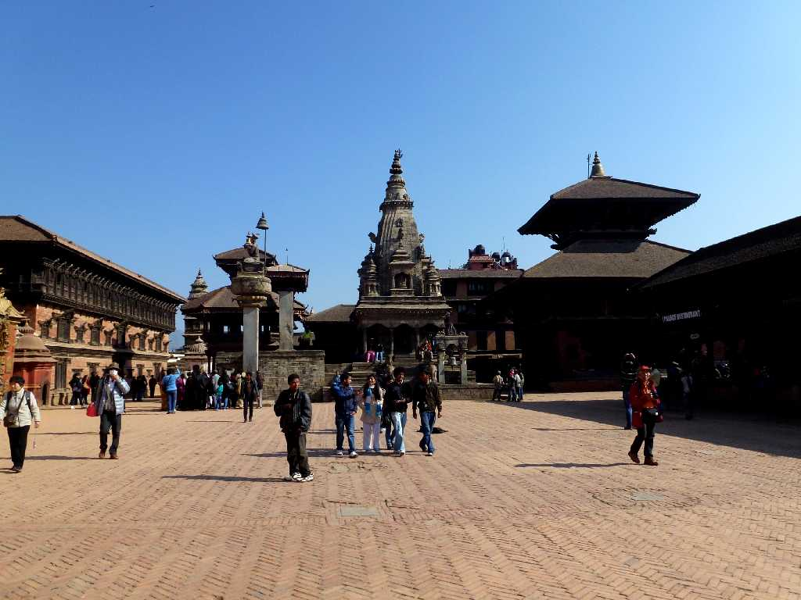
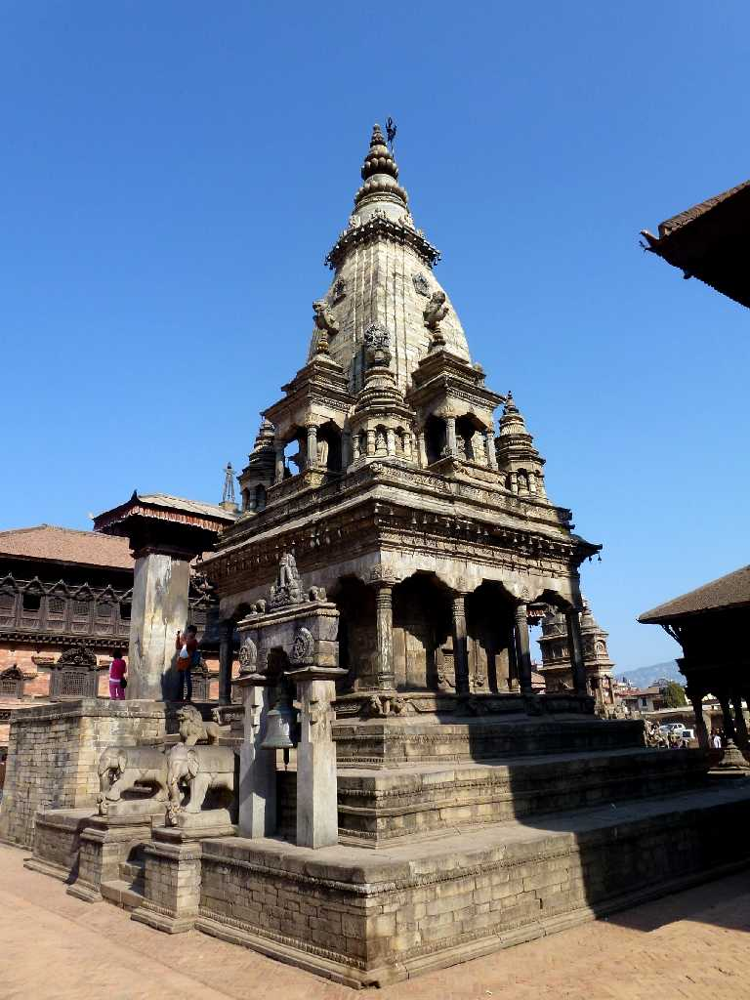
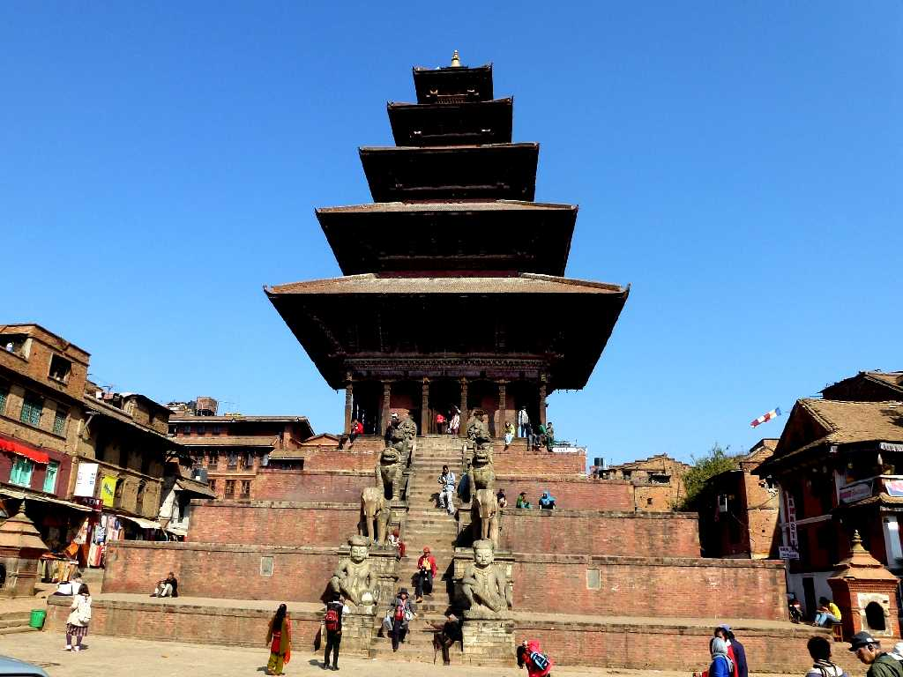
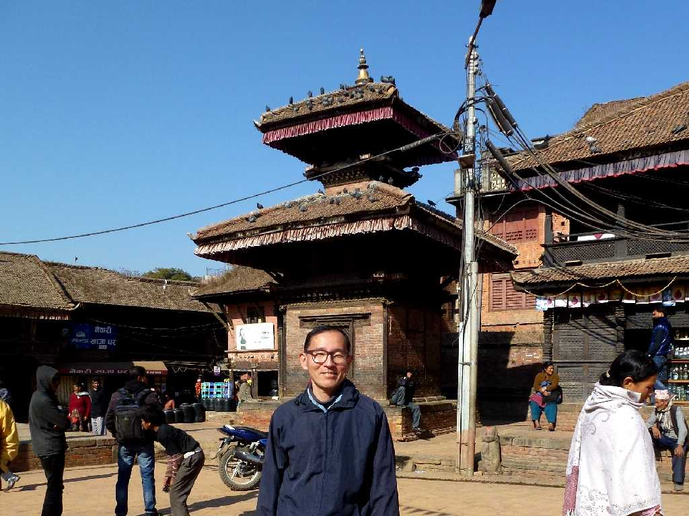

Darbar Square Bhaktapur
バクタプルの中心街ダルバール広場

Vatsala Durga Temple
１５世紀頃創られた慈悲と繁栄の女神ドゥルガーを祀ったヒンドゥー教のヴァツサラドゥルガー寺院

Nyatapola Temple
１７０２年に創られたネパールで最も高い３０ｍの寺院でシバ神とバルヴァティ神を祀ったヒンドゥー教の五階建てを意味するニャタポラ寺院

January 1 2013 Bhaktapur